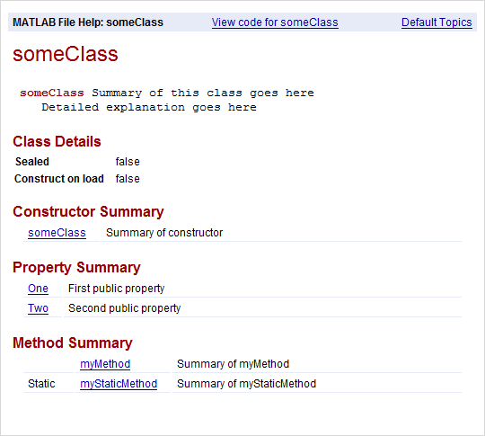

Create Help for Classes
Help Text from the doc Command
When you use the doc command to display help for a class,
MATLAB® automatically displays information that it derives from the class
definition.
For example, create a class definition file named someClass.m
with several properties and methods, as shown.
classdef someClass % someClass Summary of this class goes here % Detailed explanation goes here properties One % First public property Two % Second public property end properties (Access=private) Three % Do not show this property end methods function obj = someClass % Summary of constructor end function myMethod(obj) % Summary of myMethod disp(obj) end end methods (Static) function myStaticMethod % Summary of myStaticMethod end end end
View the help text and the details from the class definition using the
doc command.
doc someClass
Custom Help Text
You can add information about your classes that both the doc
command and the help command include in their displays. The
doc command displays the help text at the top of the
generated HTML pages, above the information derived from the class definition. The
help command displays the help text in the Command Window.
For details, see:
Classes
Create help text for classes by including comments on lines immediately after
the classdef statement in a file. For example, create a file
named myClass.m, as shown.
classdef myClass % myClass Summary of myClass % This is the first line of the description of myClass. % Descriptions can include multiple lines of text. % % myClass Properties: % a - Description of a % b - Description of b % % myClass Methods: % doThis - Description of doThis % doThat - Description of doThat properties a b end methods function obj = myClass end function doThis(obj) end function doThat(obj) end end end
Lists and descriptions of the properties and methods in the initial comment
block are optional. If you include comment lines containing the class name
followed by Properties or Methods and a
colon (:), then MATLAB creates hyperlinks to the help for the properties or
methods.
View the help text for the class in the Command Window using the
help command.
help myClass myClass Summary of myClass
This is the first line of the description of myClass.
Descriptions can include multiple lines of text.
myClass Properties:
a - Description of a
b - Description of b
myClass Methods:
doThis - Description of doThis
doThat - Description of doThat Methods
Create help for a method by inserting comments immediately after the function
definition statement. For example, modify the class definition file
myClass.m to include help for the
doThis method.
function doThis(obj) % doThis Do this thing % Here is some help text for the doThis method. % % See also DOTHAT. disp(obj) end
View the help text for the method in the Command Window using the
help command. Specify both the class name and method
name, separated by a dot.
help myClass.doThis doThis Do this thing
Here is some help text for the doThis method.
See also doThat.Properties
There are two ways to create help for properties:
Insert comment lines above the property definition. Use this approach for multiline help text.
Add a single-line comment next to the property definition.
Comments above the definition have precedence over a comment next to the definition.
For example, modify the property definitions in the class definition file
myClass.m.
properties
a % First property of myClass
% b - Second property of myClass
% The description for b has several
% lines of text.
b % Other comment
endView the help for properties in the Command Window using the
help command. Specify both the class name and property
name, separated by a dot.
help myClass.aa - First property of myClass
help myClass.bb - Second property of myClass The description for b has several lines of text.
Enumerations
Like properties, there are two ways to create help for enumerations:
Insert comment lines above the enumeration definition. Use this approach for multiline help text.
Add a single-line comment next to the enumeration definition.
Comments above the definition have precedence over a comment next to the definition.
For example, create an enumeration class in a file named
myEnumeration.m.
classdef myEnumeration enumeration uno, % First enumeration % DOS - Second enumeration % The description for DOS has several % lines of text. dos % A comment (not help text) end end
View the help in the Command Window using the help command.
Specify both the class name and enumeration member, separated by a dot.
help myEnumeration.unouno - First enumeration
help myEnumeration.dosdos - Second enumeration The description for dos has several lines of text.
Events
Like properties and enumerations, there are two ways to create help for events:
Insert comment lines above the event definition. Use this approach for multiline help text.
Add a single-line comment next to the event definition.
Comments above the definition have precedence over a comment next to the definition.
For example, create a class in a file named
hasEvents.m.
classdef hasEvents < handle events Alpha % First event % Beta - Second event % Additional text about second event. Beta % (not help text) end methods function fireEventAlpha(h) notify(h,'Alpha') end function fireEventBeta(h) notify(h,'Beta') end end end
View the help in the Command Window using the help command.
Specify both the class name and event, separated by a dot.
help hasEvents.AlphaAlpha - First event
help hasEvents.BetaBeta - Second event Additional text about second event.